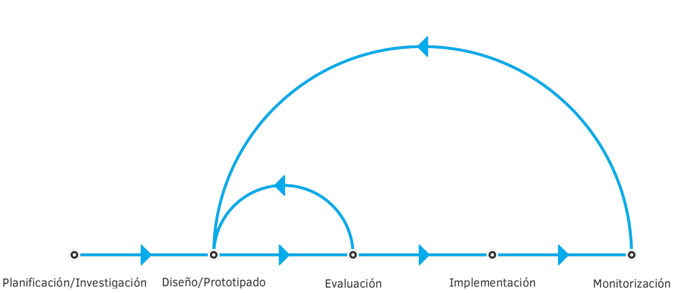

UD1:PLANIFICACIÓN DE INTERFACES GRÁFICAS
- CE 1.1. Se ha reconocido la importancia de la comunicación visual y sus principios básicos.
- CE 1.2. Se han analizado y seleccionado los colores y tipografías adecuados para su visualización en pantalla.
- CE 1.4. Se ha valorado la importancia de definir y aplicar la guía de estilo en el desarrollo de una aplicación web.
- CE 1.6. Se han creado y utilizado plantillas de diseño.
INTERACCIÓN HOMBRE-MÁQUINA
¿Qué es una Interfaz de Usuario?
- Denominamos UI (User Interface), a la parte de una aplicación, dispositivo o servicio con la que interactúa un usuario. La UI abarca desde todos los elementos gráficos y visuales, como botones, menús, imágenes, disposición de la pantalla... hasta accesorios y dispositivos físicos que permitan la comunicación entre el usuario y el sistema, como pantallas, ratones, teclados, mandos o paneles de control.
- Según la forma en la que interactua el usuario, diferenciamos 3 grandes tipos de interfaces:
- CLI: Interfaz de línea de comandos

- Es la más antigua pero que a día de hoy se sigue utilizando. Se basa en comandos de texto ingresados por el usuario para ejecutar tareas y gestionar programas o archivos. Ejemplo de esta UI es el sistema operativo MS-DOS, así como también, el Shell de comandos que forma parte del sistema operativo Windows.
- GUI: Interfaz gráfica de usuario

- Se trata del tipo de interfaz más usado en la actualidad para ordenadores o dispositivos móviles. Este entorno se fundamenta en imágenes y elementos gráficos que presentan tanto la información, como las acciones que se encuentran disponibles para interactuar entre el usuario y el dispositivo. Una página web o la mayoría de aplicaciones de escritorio actuales, se basan en ella.
- NUI: Interfaz de usuario natural

-
Es un tipo de interfaz busca crear una conexión lo más natural posible con el usuario. Para ello se fundamenta en la interacción intuitiva mediante gestos corporales, toques o movimientos físicos, así como en el reconocimiento de órdenes por voz. Ejemplos de esta interfaz son los dispositivos de realidad virtual (VR), o sistemas que usan sensores de movimiento como el antiguo Kinect de Xbox.
-
Nosotros desde la perspectiva del Diseño Web, vamos a centrarnos principalmente en las GUI y en como utilizar de forma eficiente los elementos de diseño, para crear interfaces intuitivas, agradables e interactivas.
¿Qué es la Experiencia de Usuario?
- La experiencia de usuario o UX (User Xperience) es la manera en que el usuario percibe, siente o interactúa con un sistema o servicio. Se trata de las sensaciones del usuario mientras esta haciendo uso de una web, una app o cualquier otro servicio.
-
UX es un grupo de disciplinas: interacción, arquitectura de la información, animación en diseño, estilo de comunicación. Pero también es un proceso dinámico que debe involucrar una serie de fases para garantizar la calidad de un producto.
-
Los principales métodos para mejorar la UX son:
- Analítica Web
- Card Sorting
- Diagramas de interacción
- Diseño modular
- Encuestas y entrevistas
- Evaluación eurística
- Personajes y escenarios.
- Pruebas A/B
- Pruebas con usuarios
- ROI
-
Wireframes
-
Conceptos fundamentales de UX:
- Usabilidad: es un atributo de calidad de un producto que se refiere sencillamente a su facilidad de uso.
- Accesibilidad: que se refiere a la posibilidad de que pueda ser usado sin problemas por el mayor número de personas posibles, independientemente de las limitaciones propias del individuo o de las derivadas del contexto de uso.

- Arquitectura de información: se refiere a la práctica de definir, organizar y presentar los elementos y contenidos de un entorno digital, de forma que resulte los más intuitivo y facil posible para el usuario.

UI vs UX

Diseño centrado en el usuario
-
Tambien conocido como UCD (User-Centered Design) hace referencia a una filosofía de diseño en la que el proceso está conducido por información acerca de la audiencia objetiva del producto. Su principal diferencia frente a otros enfoques es que su proceso no es secuencial o lineal, sino que presenta ciclos en los que iterativamente se prueba el diseño y se optimiza hasta alcanzar el nivel de calidad esperado.

-
Metodología Agile: es una de las métodologías de desarrollo de proyectos centrada en el usuario más populares, sobre todo en el mundo del desarrollo software. Su manifiesto se basa en 12 principios fundamentales.

ELEMENTOS BÁSICOS DEL DISEÑO GRÁFICO
Los elementos del diseño gráfico, son los componentes fundamentales que usamos para crear una composición visual. Es decir, son las piezas básicas que, organizadas y combinadas de una cierta manera, nos permiten crear una comunicación visual efectiva.
Con ellos podemos estructurar y dar forma a las ideas y mensajes que se quieren transmitir. Cada elemento tiene sus propias características y funciones, y su correcto uso puede marcar la diferencia entre un diseño que comunica de manera clara y efectiva, y uno que no logra conectar con su audiencia.
LA LÍNEA

Las líneas son los trazos básicos que conectan dos o más puntos en el espacio. En diseño gráfico, las líneas se utilizan para crear separación o estructura, definir formas, conectar contenidos, guiar la mirada del espectador o añadir dinamismo a la composición.
Las líneas pueden ser rectas, curvas, gruesas, delgadas, continuas o discontinuas, y cada tipo de línea puede transmitir un mensaje diferente. Por ejemplo, las líneas rectas y horizontales suelen transmitir estabilidad y orden; mientras que las líneas curvas pueden sugerir movimiento y fluidez.
FORMA

La forma es cualquier área delimitada por líneas, bordes o contornos; y diferenciamos 3 grandes tipos:
- Orgánicas: representan cosas de la naturaleza o que se generan de manera natural en el mundo.
- Geométricas: son las formas esenciales basadas en el fundamento matemático.
- Abstractas: representaciones de objetos, personas, acciones o señales.
Las formas sirven para comunicar conceptos de manera visual, ya que transforman una idea en algo reconocible por todos. Un ejemplo claro son los logotipos, que gracias a ellos podemos asociar un empresa a una serie de valores o emociones con los que se quieren identificar.
Dependiendo de lo que queramos evocar debemos usar una forma concreta, ya que cada una va a transmitir algo. Incluso existe una relación entre cómo nombramos las cosas y su apariencia visual, como demostró el experimento "Kiki/Bouba".

ESPACIO

El espacio es el área que forma parte de los elementos del diseño y el que lo rodea.
Existen dos tipos de espacios: el espacio positivo es el que ocupado por los elementos en tu composición y el espacio negativo es el resto del espacio, es decir, el espacio vacío.
El espacio ayuda a evitar que una composición se vea saturada y permite que los elementos "respiren". Además, el uso estratégico del espacio negativo puede dirigir la atención del espectador hacia los elementos clave y crear un diseño más limpio y sofisticado. En diseño gráfico, el espacio no es simplemente un área vacía; es una herramienta poderosa para estructurar y definir la relación entre los elementos.
TAMAÑO

El tamaño es un elemento clave que se utiliza para establecer la jerarquía visual dentro de un diseño. A través del tamaño, los diseñadores pueden destacar los elementos más importantes y guiar la atención del espectador en el orden deseado.
Por ejemplo, los títulos suelen ser más grandes que el cuerpo del texto para captar la atención de inmediato. El uso del tamaño también puede crear contraste y dar dinamismo a la composición. Jugar con las proporciones entre los elementos puede hacer que un diseño sea más interesante y ayudar a reforzar el mensaje que se quiere comunicar.
COLOR

El color es uno de los elementos más poderosos del diseño gráfico. No solo añade interés visual, sino que también podemos recrear atmósferas o evocar emociones, recuerda que cada color tiene connotaciones culturales, sociales, emocionales. Lo que nos viene muy bien a nivel comunicativo, como por ejemplo, para otorgar la personalidad que nos interese a una marca específica.
Por ejemplo, los colores cálidos como el rojo y el naranja pueden transmitir energía y urgencia, mientras que los colores fríos como el azul y el verde suelen evocar calma y serenidad.
TEXTURA

La textura se refiere a la apariencia y sensación superficial de un objeto dentro del diseño. Puede ser real, como la textura rugosa de un papel, o simulada, como una imagen que representa la suavidad del terciopelo.
En diseño gráfico, la textura añade profundidad y dimensión a las composiciones, haciendo que los elementos se sientan más tangibles y atractivos. También pueden influir en el tono del diseño, ya que las superficies ásperas y rugosas pueden transmitir rusticidad o dureza; mientras que las superficies suaves y lisas pueden evocar elegancia y simplicidad.
TIPOGRAFÍA

Las tipografías pueden transmitir la personalidad de una marca o establecer un tono específico. Por supuesto son el principal determinante de la legibilidad del texto.
Desde las fuentes serif clásicas que evocan tradición y seriedad, hasta las fuentes sans-serif modernas que sugieren limpieza y minimalismo. Además, mediante sus diferentes grosores, podemos enfatizar ideas o generar una jerarquía visual dentro nuestra composición
PRINCIPIOS DEL DISEÑO
En la siguiente infografía, podemos ver los principios más relevantes en el diseño para la experiencia de usuario, así como las características más relevantes de cada uno:

- Clasificación
- Color
- Eficiencia
- Error humano
- Estética
- Fotografías
- Iconos
- Inteligencia colectiva
- Jerarquía visual
- Legibilidad e inteligibilidad
- Ley de Fitts
- Mapeo Natural
- Ordenación
- Relevancia
- Taxonomías
- Toma de decisions
- Visibilidad y retroalimentación
SISTEMAS DE DISEÑO
¿QUÉ SON?
Un sistema de diseño es un conjunto de principios, componentes, guías y herramientas que permiten mantener la coherencia y escalabilidad en el desarrollo de productos digitales (aplicaciones, sitios web, etc.).
Se enfoca tanto en el diseño visual como en la experiencia del usuario y el código.
Su objetivo es facilitar la colaboración entre diseñadores y desarrolladores, al tiempo que garantiza la consistencia en todo el producto.

ELEMENTOS CLAVE
- Principios de diseño: Son las reglas básicas que guían las decisiones de diseño, asegurando que el enfoque sea coherente y alineado con la identidad de la marca.
- Guías de estilo: Describen el uso correcto de tipografías, colores, espaciados, iconografía y otros elementos visuales.
- Componentes reutilizables: Botones, menús, formularios y otros componentes que se usan repetidamente en diferentes partes de la interfaz. Estos están estandarizados para que todos los equipos los utilicen de manera consistente.
- Biblioteca de patrones: Conjunto de patrones de diseño probados para resolver problemas comunes (por ejemplo, navegaciones, barras de búsqueda, etc.).
- Tokens de diseño: Variables de diseño que se utilizan en el código para definir colores, tamaños, tipografía, etc. Pueden ser fácilmente actualizados y aplicados a toda la interfaz.

HERRAMIENTAS SOFTWARE

Una de software más utilizados (si no la que más) para diseño prototipado web, es Figma.
Es una herramienta de diseño y prototipado basada en la nube que permite a los equipos crear interfaces de usuario de forma colaborativa y en tiempo real. Podemos abrir Figma directamente desde el navegador web o mediante su aplicación de escritorio.
Entre sus principales usos, destacamos:
- Diseño de interfaces (UI/UX): Permite crear el aspecto visual de sitios web, aplicaciones móviles y otros productos digitales.
- Prototipado interactivo: Ayuda a simular cómo funcionará una aplicación o página web mediante enlaces entre pantallas y animaciones.
- Sistemas de Diseño: se podría decir, que es la herramienta estándar de la industria y una de las mejores opciones para crear, gestionar y escalar sistemas de diseño.
- Trabajo en equipo: Permite que varios usuarios editen un mismo archivo al mismo tiempo, de forma similar a Google Docs.
- FigJam: Ofrece un espacio de pizarra virtual integrado para hacer lluvias de ideas, diagramas y planificar proyectos.
- Modo desarrollador (Dev Mode): Facilita la inspección de diseños para que los programadores puedan extraer medidas, colores y códigos necesarios.
🎨 PRÁCTICA: CREAR UN SISTEMA DE DISEÑO EN FIGMA
Fuentes: Experiencia de usuario: Principios y Métodos, Acumbamail Blog, Centro de Estudios de Innovación